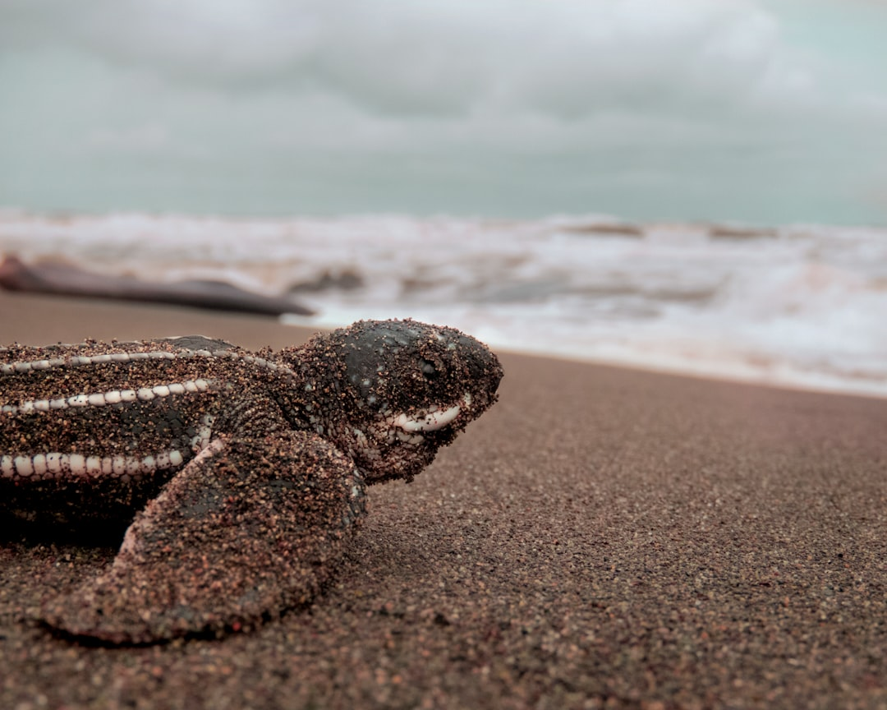

April 01, 2026
Galathea Bay on the Great Nicobar Island has seen record nesting of Leatherback turtles; then why are environmentalists not celebrating?
Record turtle nesting proves this bay should be protected. Yet a ₹80,000 crore mega-project got approved for 'defence priorities and economic growth'. But at what cost?

Image by Max Gotts on Unsplash
What's happening?
- Sea turtles, especially endangered Leatherbacks, have nested in record numbers at Galathea Bay on Great Nicobar Island last month. At least 900 nestings have been recorded in February-March 2026, with Leatherbacks making up 90% of the activity. This is the highest nesting activity in four decades for Leatherbacks in the Indian Ocean.
- A ₹80,000 crore mega project has been planned in the Great Nicobar Island. This includes a transshipment port that would reduce the bay's opening by 90%, threatening this vital breeding ground.
- CRZ-1A is a category of coastal land that has maximum protection under law on account of its ecological importance and where development projects are fully prohibited. The National Green Tribunal approved the project in February asserting that no part of the project site is a CRZ-1A area. This turtle data proves otherwise. The nesting there is a clear sign that this Bay is critical to their survival and needs the highest degree of protection.
Why should you care?
- Leatherback turtles are endangered globally and Galathea Bay is their most important nesting site in the northern Indian Ocean. But they're just one of many endemic species on Great Nicobar Island—one of the most remote places on the earth.
- The planned mega-project threatens to put all of this at risk.
- This is a classic debate of strategic priorities (the stated reason for the project is that it is critical for India's defence presence), economic growth and ecological protection. And the ecology is losing this one badly.